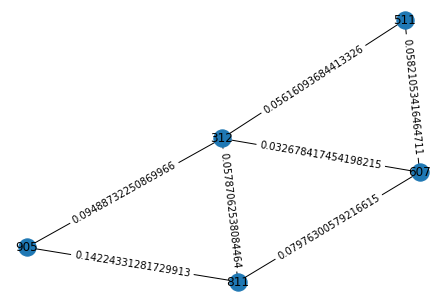
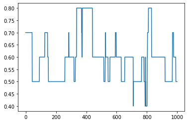
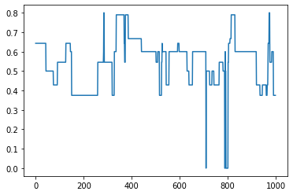

Network analysis¶
[1]:
import movekit as mkit
import numpy as np
import pandas as pd
import matplotlib.pyplot as plt
from scipy.spatial import Voronoi, voronoi_plot_2d, convex_hull_plot_2d, delaunay_plot_2d
import networkx as nx
import collections
[2]:
path = "datasets/fish-5-features.csv"
data = mkit.read_data(path)
data.head()
[2]:
| time | animal_id | x | y | distance | average_speed | average_acceleration | direction | stopped | |
|---|---|---|---|---|---|---|---|---|---|
| 0 | 1 | 312 | 405.29 | 417.76 | 0.0 | 0.210217 | -0.018039 | 0.0 | 1 |
| 1000 | 1 | 511 | 369.99 | 428.78 | 0.0 | 0.020944 | 0.000236 | 0.0 | 1 |
| 2000 | 1 | 607 | 390.33 | 405.89 | 0.0 | 0.070235 | 0.004961 | 0.0 | 1 |
| 3000 | 1 | 811 | 445.15 | 411.94 | 0.0 | 0.370500 | 0.017482 | 0.0 | 1 |
| 4000 | 1 | 905 | 366.06 | 451.76 | 0.0 | 0.118000 | -0.006333 | 0.0 | 1 |
Obtaining a list of graphs, based on delaunay triangulations¶
Each timestep carries the respective graph with data attached to nodes, edges and graph. Just insert time and animal specific x and y coordinate data.
[3]:
# A list of all graphs
graphs = mkit.network_time_graphlist(data)
c:\users\manuel\appdata\local\programs\python\python38\lib\site-packages\movekit\feature_extraction.py:297: UserWarning: Recalculating centroid-distances, since not found in input dataset!
warnings.warn(
[4]:
# Visualizing the graph for time step '2'-
labels = nx.get_node_attributes(graphs[2], 'animal_id')
pos = nx.spring_layout(graphs[2])
nx.draw(graphs[2], pos)
node_labels = nx.get_node_attributes(graphs[2], 'animal_id')
nx.draw_networkx_labels(graphs[2], pos=pos, labels=node_labels)
edge_labels = nx.get_edge_attributes(graphs[2], 'distance')
nx.draw_networkx_edge_labels(graphs[2], pos=pos, edge_labels=edge_labels)
plt.show()

[5]:
# Display all graph attributes at time 2
graphs[2].graph
[5]:
{'time': 3,
'x_centroid': 395.392,
'y_centroid': 423.234,
'medoid': 312,
'polarization': 0.323949515577163,
'total_dist': 1.025155304577569,
'mean_speed': 0.1556100759950875,
'mean_acceleration': -0.0003387029795760603,
'mean_distance_centroid': 29.691399999999998,
'centroid_direction': 54.4623222079596}
[6]:
# Display all edges at time 2
graphs[2].edges
[6]:
EdgeView([(312, 811), (312, 607), (312, 511), (312, 905), (811, 905), (811, 607), (607, 511)])
[7]:
# Display the distance of one node pair at time 2
graphs[2].edges[312, 811]
[7]:
{'distance': 0.05787062538084464}
[8]:
# Display all attributes of node 312 at time 2
graphs[2].nodes[312]
[8]:
{'time': 3,
'animal_id': 312,
'x': 405.31,
'y': 417.07,
'distance': 0.30000000000001137,
'average_speed': 0.17472339975245438,
'average_acceleration': -0.0180393818878736,
'direction': -90.0,
'stopped': 1,
'x_centroid': 395.392,
'y_centroid': 423.234,
'medoid': 312,
'distance_to_centroid': 11.677}
Network analysis¶
The networkx package enables to analyze the extracted graphs over time. See doc: https://networkx.org/documentation/stable/index.html
[9]:
len(graphs)
[9]:
1000
[10]:
# Plot number of nodes over time
num_edges = []
for G in graphs:
num_edges.append(nx.number_of_edges(G))
plt.plot(num_edges)
plt.show()

[11]:
# Plot clustering coefficient over time
avg_cluster = []
for G in graphs:
avg_cluster.append(nx.average_clustering(G))
plt.plot(avg_cluster)
plt.show()

[12]:
# Plot density over time
dens = []
for G in graphs:
dens.append(nx.density(G))
plt.plot(dens)
plt.show()

[13]:
# Plot transitivity over time
trans = []
for G in graphs:
trans.append(nx.transitivity(G))
plt.plot(trans)
plt.show()

Compute features for individiual nodes
[14]:
# Pick the first graph
G = graphs[0]
[16]:
# Degree
dict(G.degree())
[16]:
{312: 4, 811: 3, 905: 2, 607: 3, 511: 2}
[17]:
# Degree centraility
nx.degree_centrality(G)
[17]:
{312: 1.0, 811: 0.75, 905: 0.5, 607: 0.75, 511: 0.5}
[18]:
# Clustering coefficient
nx.clustering(G)
[18]:
{312: 0.5,
811: 0.6666666666666666,
905: 1.0,
607: 0.6666666666666666,
511: 1.0}
[19]:
# Degree rank
degree_sequence = sorted([d for n, d in G.degree()], reverse=True)
dmax = max(degree_sequence)
plt.loglog(degree_sequence, "b-", marker="o")
plt.title("Degree rank plot")
plt.ylabel("degree")
plt.xlabel("rank")
plt.show()

For more methods please check the networkX doc: https://networkx.org/documentation/stable/index.html